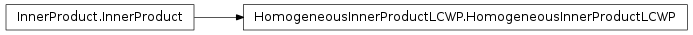
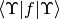
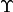
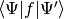
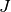
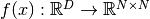
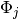
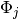
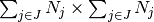
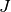

HomogeneousInnerProductLCWP¶
About the HomogeneousInnerProductLCWP class¶
The WaveBlocks Project
@author: R. Bourquin @copyright: Copyright (C) 2010, 2011, 2012, 2013, 2014 R. Bourquin @license: Modified BSD License
Inheritance diagram¶

Class documentation¶
- class WaveBlocksND.HomogeneousInnerProductLCWP(delegate=None, oracle=None)¶
- __init__(delegate=None, oracle=None)¶
Note that although this class computes the homogeneous inner product  of a single linear combination  with itself, the delegate inner product class used for computing  has still to be of inhomogeneous type.
Parameters: - delegate (A InnerProduct subclass instance.) – The delegate inner product.
- oracle – The sparsity oracle to use. If the variable is None no oracle is used and all integrals are computed.
Note
Make sure to use an inhomogeneous inner product here.
- build_matrix(lcket, operator=None, component=None, eval_at_once=False)¶
Delegates the computation of the matrix elements of for a general function
 with
with  .
The matrix is computed without including the coefficients
.
The matrix is computed without including the coefficients  .
.Parameters: - lcket – The linear combination with  summands
 .
. - operator – A matrix-valued function .
- component (Integer or None, default is None.) – The index
 of the component  of . If set only those
components will be taken into account for the computation.
of the component  of . If set only those
components will be taken into account for the computation. - eval_at_once (Boolean, default is False.) – Flag to tell whether the operator supports the entry=(r,c) call syntax.
Returns: A matrix of size .
Type : An ndarray.
- lcket – The linear combination with  summands
- get_delegate()¶
Return the Quadrature subclass instance used for evaluation of this inner product.
Returns: The current instance of the quadrature.
- get_description()¶
Return a description of this inner product object. A description is a dict containing all key-value pairs necessary to reconstruct the current instance. A description never contains any data.
- get_oracle()¶
Return the sparsity oracle in use or None.
- quadrature(lcket, operator=None, component=None, eval_at_once=False)¶
Delegates the evaluation of for a general function
with .Parameters: - lcket – The linear combination with summands .
- operator – A matrix-valued function .
- component (Integer or None, default is None.) – The index of the component of . If set only those
components will be taken into account for the computation.
- eval_at_once (Boolean, default is False.) – Flag to tell whether the operator supports the entry=(r,c) call syntax.
Returns: The value of .
Type : An ndarray.
- lcket – The linear combination with summands
- set_delegate(delegate)¶
Set the Quadrature subclass instance used for quadrature.
Parameters: delegate – The new Quadrature instance.
- set_oracle(new_oracle)¶
Set the sparsity oracle.
Parameters: new_oracle – The new oracle to use. If the variable is None no oracle is used and all integrals are computed.